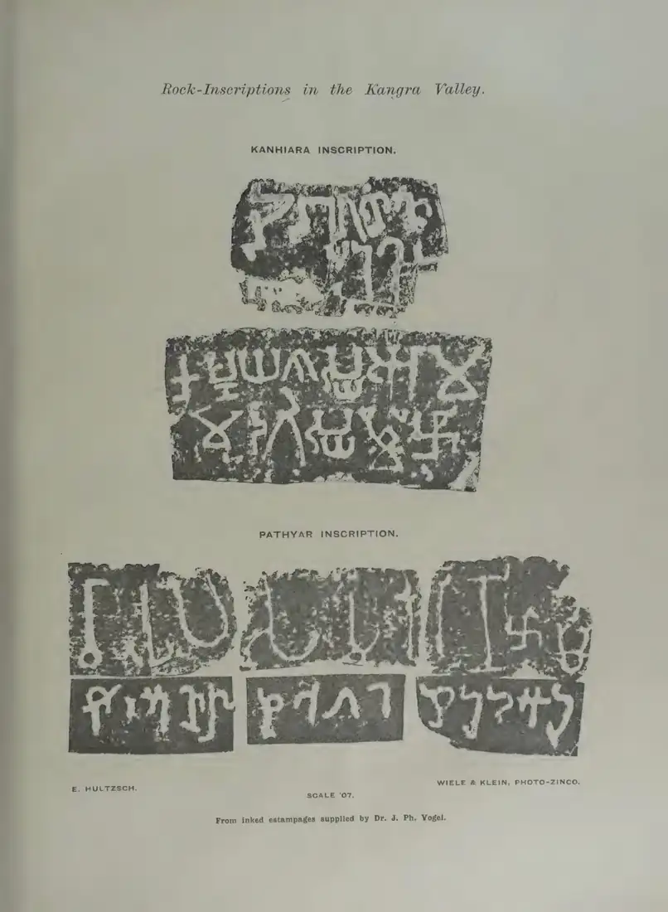

Two Brāhmī and Kharôshṭhī rock-inscriptions in the Kāṅṇra valley
TWO BRAHMI AND KHAROSHTHI ROCK-INSCRIPTIONS IN THE KANGRA VALLEY.
By J. PH. VOGEL, LL.D.
The first of these two rock-inscriptions was discovered by Sir E. C. Bayley at Kanhiâra, three miles to the east of Lower Dharmsâlâ on the bank of the Mânjî torrent, and was edited by him in 1854 from drawings made by Lieutenants Crofton and Dyas.6 In 1875 it was reproduced again and discussed by General Cunningham.7
The second inscription I found last summer in the course of an archæological tour in the Kângra district near a place called Paṭhyâr, situated nine miles south of Kanhiâra on the bank of the Baner rivulet, at a distance of about one mile from the Dâdh Travellers' Bungalow.
1 This term means 'land belonging to a Jaina temple;' see South-Ind. Inscr. Vol. II. p. 52, note 2, and above, Vol. IV. p. 138.
2 See above, Vol. VI. p. 329 f.
3 See p. 115 above.
4 See above, A. I. 3.
5 From an inked stampage.
6 J. A. S. B. Vol. XXIII. p. 57.
7 Arch. Survey Reports, Vol. V. p. 175, Plate xlii.
The two inscriptions are so nearly alike in script, substance and general character that it appears desirable to publish them together, the more so as the Kanhiâra inscription has not yet been edited satisfactorily and the Pathyâr inscription, as far as I know, has not been noticed before by any archæologist.
The legend in both cases is given in two different alphabets,— Brâhmî and Kharôshthî, though evidently of two very different periods. In each case the inscription contains only two words in both scripts, whereas a third word occurs in one script only. But at Kanhiâra this additional word belongs to the Brâhmî, while at Pathyâr it forms part of the Kharôshthî legend. The explanation of this third word is somewhat difficult. Otherwise the reading may be said to be beyond doubt, owing to the enormous size and the clearness of the letters, which are deeply cut in hard granite boulders. Finally two auspicious symbols are in each case added after the Brâhmî legend, one of which is the well-known svastika.
The Kanhiâra inscription was read by Sir E. C. Bayley as follows :—Krishnayasasa ârâma in Kharôshthî, and Krishnayasasya ârâma medangisya in Brâhmî. I may state at once that the correct reading of the first word appears to be Krishamîyašasa and Krishnayasasya respectively, whereas the length of the first a of ârâma, as a matter of fact, is not expressed in Kharôshthî.1 He explains it as “the garden of Krishnayasas, to which in the second inscription some wag has apparently added the epithet medangisya (corpulent) from med (fat) and anga (body).”
Cunningham, however, preferred to consider ârâma as a synonym of vihâra, translating it by “the monastery of Krishnayasas,” and even went so far as to derive the name Kanhiâra from Kanhiya-yasas-ârâma, Kanhiya being a synonym of Krishna. The third word he read mâdangisya, and he thought it to be “the name of the district or possibly of the recorder of the inscription.”
Now, before entering upon any discussion of these doubtful points, it will be well to examine the other inscription, which from its similarity is likely to contribute fresh evidence. The Pathyâr inscription consists of two lines, cut into one stone. The upper line gives the two words in Brâhmî followed by a svastika and a foot-print. In the lower line, which was partly buried in the ground, is the Kharôshthî legend, which consists of three words. The Brâhmî letters are of considerable size, the final one being not less than high. The Kharôshthî characters are much smaller (5" to 9"). Thus, notwithstanding the difference in the number of letters, both lines are about equal in length, viz. '.
It is evident at once that the two words in Brâhmî correspond to the second and third words of the Kharôshthî legend. I read them Vayulasa pukkarinî2 or, in correct spelling, Vâyulassa pukkharinî, the meaning being simply “Vâyula's lotus-pond.” With regard to the first word of the Kharôshthî, the meaning is less obvious. Manifestly it is a genitive defining the proper name Vâyulassa. It seems to me almost certain that it has to be read rathidarasa, i.e. in Sanskrit rathitarasya. The i may be either short or long. If short, the word is to be taken as the comparative of rathin; if long, of the Vêdic rathî. The meaning remains the same, viz. 'charioteer' (from ratha). According to the St. Petersburg Dictionary the word rathîtara occurs as a proper name in the Vishṇupurâna also. But the meaning which has to be assigned to the word in the Pathyâr inscription is, I believe, a different one. Râthî is the name of an agricultural caste in Kângra.3 If Vâyula really was a Râthî, we may infer that, in the time of the inscription, the Râthîs were not inhabitants
1 I have to point out that the a has a small horizontal stroke to the right. But it is little prominent and may be a natural hole in the rock.
2 The length of a in vâ is expressed only in the Brâhmî. The u-stroke of yu is not found in the Brâhmî, but is perfectly clear in the Kharôshthî legend.
3 Gazetteer of the Kangra District, Vol. I. (1883-84), p. 88 f.
of that fertile part of the valley to which Pathyâr certainly belongs. For, if this had been the case, a man belonging to the Râthî caste would hardly have designated himself as such in order to distinguish himself from his neighbours. This, as far as I can see, is the only historical conclusion which can be drawn from the Pathyâr inscription. Its chief interest, therefore, is purely palæographical.
If we compare the two inscriptions, it is obvious that the Pathyâr stone exhibits a much earlier type of script than the Kanhiâra one. This is evident in part from some of the Kharôshthî letters, e.g. the s, which at Pathyâr has the closed shape of the Asôka period, whereas at Kanhiâra it is open as in the Šaka-Kushana inscriptions. On the whole, however, the Kharôshthî of both inscriptions is fairly identical. But a striking difference is shown in the Brâhmî legends. The Kanhiâra inscription was assigned by Bayley and Cunningham to the first century after Christ. Possibly it is later. The y with its three vertical strokes of equal length agrees best with forms of the 2nd and 3rd centuries.1 The â shows a great resemblance to the type of this letter in the 2nd century.2 The m is angular instead of rounded as in the more ancient type. The ś, on the contrary, with its straight strokes, has a more archaic form. So has the g, which is angular and not rounded.
The Brâhmî type of the Pathyâr inscription, however, corresponds entirely with that of the Asôka period — the earlier Maurya type as Professor Bühler called it — and therefore can safely be said to belong to the 3rd century B.C.3 We may infer that both Brâhmî and Kharôshthî were known and used in the Kângra valley from that time until the first or second century after Christ.
It is a fact worth noticing, that, while the indigenous character had developed considerably during the course of the three or four centuries, the foreign alphabet had practically remained the same. The most plausible explanation would be that in those parts the Brâhmî was the popular script used in commerce and common life, while the use of the Kharôshthî was limited to official documents and was in consequence fairly constant. The greater importance attached to the Brâhmî may also appear from its taking the first place in the Pathyâr inscription and from the larger size of the letters, though it must be admitted that the fuller reading is given in Kharôshthî. In the Kanhiâra inscription the Brâhmî has the additional word. But in both inscriptions the maṅgalas are placed after the Brâhmî and not after the Kharôshthî.
Now, to return to the Kanhiâra inscription, it remains to be considered whether the newly found inscription throws any light on its meaning. First of all one feels inclined to assign to the word ârâma the ordinary meaning of 'garden,' and not that of 'monastery' as Cunningham did.4 For, considering that Vâyula found it worth while to cut an inscription which would stand the ages, simply to indicate that he was the owner of a lotus-pond, there is no reason to assume that Krìshṇayaśas did not do the same with regard to his garden. Moreover, in the case of a monastery the founder would preferably have written his name on the building, and not on two boulders lying near it.
With regard to the doubtful term medaṅgisya, we may with Cunningham reject Bayley's supposition that the word was added by some wag in order to ridicule Krìshṇayaśas. It would have been a very poor joke indeed and scarcely worth the trouble of cutting into hard granite. And are we to believe that the same wag had cut the two maṅgalas also, possibly to make amends for the offence? Corpulence, moreover, is looked upon with a different eye by the Hindû
1 See Bühler's Indische Palæographie, Plate iii. 31, XV. and XVIII.
2 Ibid. 2, XI.
3 Since writing the above, I had an opportunity of showing the impression to Dr. M. A. Stein, who, judging from a superficial examination of the Kharôshthî, thought that the inscription was rather of the early Šaka type.
4 This meaning is not even mentioned in the St. Petersburg Dictionary.
Plate 1 is bound after this page.
and by the European. Large and round limbs were considered characteristics of a mahápurusha,1 and every traveller in India will get the impression that this is the case even now.
Most probably the third word in both inscriptions indicates the caste or clan of the person mentioned. Among the meanings assigned to the word méda by the St. Petersburg Dictionary there is that of 'a certain mixed caste.' But this explanation would have to be abandoned, if with Cunningham we read mádaṅgisya. It is true that the á-stroke is ordinarily attached to the right, not to the left leg of the m; but, on the other hand, we never find the e-stroke turned to the right. Comparing the manner in which the á-stroke is attached to p, s and h, we must consider Cunningham's reading correct. Unfortunately mádaṅgisya is as difficult to explain as medaṅgisya. If we ignore the i in the penultimate syllable, it would correspond to the Sanskrit Mátaṅgasya; but that a member of this caste would be the owner of a garden and bear the name of Kṛishṇayaśas is scarcely admissible.
It was stated above that one of the two maṅgalas added to the Bráhmî legend is the svastika. The other Cunningham interpreted as an abbreviation of the syllable óṇ. This, however, does not seem very probable considering that that sacred syllable is always found at the beginning, never at the close of a sentence. But when we compare the two inscriptions in this respect, we discover a remarkable resemblance between the two maṅgalas also. The mystic sign of the Kanhiāra inscription appears to be nothing but an ornamental development of the foot-print. It would be hazardous to draw from these signs any conclusions with regard to the creed of the authors. It is true that the foot-print and the svastika are favourite signs of good omen with the Buddhists; but it should be borne in mind that they are equally honoured by the Hindús in general and probably were so even in pre-Buddhistic times.
One point still remains to be discussed,—the language. In the older inscription it is Prákṛit or Middle-Indian of the Śaurasēnī-Mahāráshtrī, not of the Māgadhī type, as appears from the r in pukkhariṇī.2 In the Kanhiāra inscription there is a difference of language in the two legends. The Kharôshthī legend is written in a Prákṛit of which the distinction made between the three sibilants is a remarkable feature. The language of the Bráhmî legend would best be characterised as Sanskritised Prákṛit, such as came into vogue among the Northern Buddhists with the rise of the Mahâyâna system. Thus linguistic evidence also would assign to this inscription the same time of origin as was found probable in view of palæographic considerations. That Cunningham was wrong in calling the language simply Sanskrit scarcely needs to be demonstrated.
1 A. Grünwedel, Buddhistische Kunst in Indien, sec. ed. (1900), p. 138.
2 See Professor Pischel's Grammatik der Prakrit-Sprachen (1900), p. 24.
